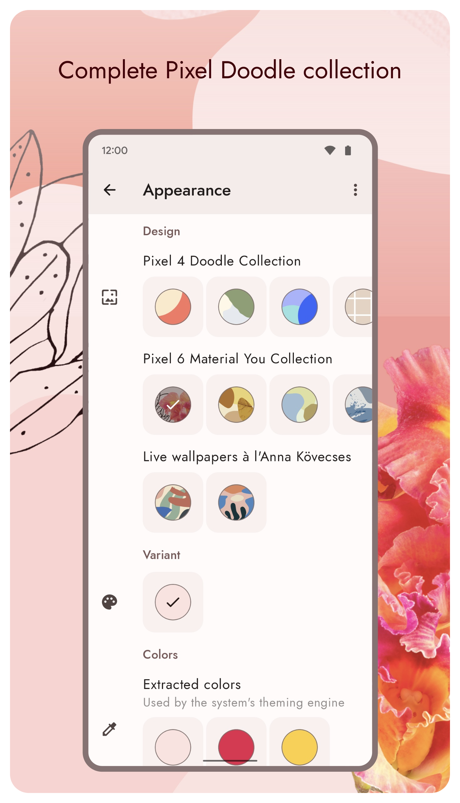

Doodle 用了快一年，我发现自己几乎没打开过它
从第一次装上 Doodle 到现在，经历了五个版本迭代。当初为了 Pixel 原生感来的，现在桌面壁纸照样会动——但设置界面对我来说已经完全消失了。这是一篇关于「设定后即忘」应用的长期使用记录。
装它到现在，快一年了
第一次翻到 Doodle 是在某个刷手机的下午，起因是想给刚换的安卓机找点有 Pixel 味的东西。Google 的涂鸦壁纸系列在 Pixel 机上是原生自带的，但非 Pixel 用户想体验就得自己找替代，Doodle 的官网上写明了它就是为这件事做的。搜了一圈之后，它是唯一一个能把那套动态渲染逻辑完整搬过来的方案——不是截几张静态图拼个假效果，是真的会随滑动、倾斜手机而动的动态壁纸引擎。
说实话当初装的时候没抱太高期望，动态壁纸吃性能的老印象一直没变。但 Pixel 4 合集的视差效果确实好看，就随手从下载拿了安装包装上了，选了一张偏蓝绿的设计，把倾斜强度调到最低，点了应用。
哪点越用越顺手
Direct Boot 是我后来才真正意识到的那个好东西。
之前用动态壁纸，每次重启都会有几秒黑屏，然后壁纸才"加载出来"。我一直以为这是所有动态壁纸的通病，直到有一次半夜重启后锁屏直接就是那套会动的涂鸦——没有空窗，没有闪烁，壁纸从系统启动的第一帧就挂在那里。后来翻了Doodle文档才知道它把设置存在了 Direct Boot 专属存储里，开机不用等解锁就能读。这个细节第一次让我觉得开发者真的想过"动态壁纸作为系统组件"这件事，而不只是个花里胡哨的装饰。
另一个越用越顺的是省电联动。我刚装的时候把三个 Respect battery saver 开关全关了，想看看全力跑的效果。结果某天出差在外，手机开了一天省电模式后回家充电，才发现那时候壁纸还在动——电量告警的红色图标旁边，视差照翻，倾斜照漂，完全没把省电模式当回事。之后老老实实把三个开关全开了，现在省电模式一来壁纸就彻底静止，电量回去自动恢复，什么都不用我管。
哪点越用越烦
颜色不生效的坑我踩了三次。
第一次改完颜色，桌面壁纸的色调没变。查了半天才发现随机换壁纸开着，手动选的颜色被随机机制覆盖了。第二次关掉随机，改完颜色还是没变，这次是息屏刷新机制——Android 12+ 改主题色不会即时应用，得息屏再亮屏才刷新。第三次我把这俩都排查了，还是没变，最后才知道是 One UI 的问题，三星系统直接忽略动态壁纸提供的取色信息。
这三步坑我依次踩了一遍，每次都是改完颜色盯着桌面愣十几秒，然后才反应过来可能不是 Doodle 的问题。如果第一次踩坑的时候有个更明显的引导提示就好了，至少让我知道"你改完颜色后需要息屏"这种系统层面的事，而不是以为应用没响应。
哪个功能成了每天离不开的
倾斜动效。
当初装的时候因为担心耗电把倾斜强度调到最低，后来慢慢往上拉，从 20% 到 40%，现在固定在 55%。手机横过来放桌面的时候，那些几何形状会跟着微微漂移，幅度不大但很真实——像桌面的一张小地图被光照着，阴影在动。这个效果的存在感很低，低到我现在可能已经意识不到它在动了，但关掉试了一下，感觉桌面突然变平了，少了点什么。
反倒是当初最吸引我的 Pixel 4 原味视差，现在成了"碰都没再碰"的功能。翻页的时候壁纸跟着滑动，刚装的时候觉得酷，现在每天刷几十屏，这个效果早就融入背景了，不再有任何新鲜感。偶尔想起来专门滑一下桌面试试看，才意识到"哦对，它还在动"。

哪个功能碰都没再碰
Anna Kövecses 合集。
这套艺术家合作的插画风格壁纸在 Doodle 里是第三套设计集合，我当初专门换了两周想试试风格变化，结果太"插画感"了，和我桌面图标那种极简方形的搭配显得不协调。换回 Pixel 4 的几何涂鸦之后就再也没碰过 Kövecses 合集。不是它不好看，是我的桌面生态已经固定，突然换个插画进来反而打破了那种平衡。
长期用下来，当初的判断变了什么
我高估了"动态"这件事，低估了"不存在"这件事。
刚装的时候我以为 Doodle 的核心竞争力是"把会动的壁纸带到非 Pixel 机上"，视差、倾斜、缩放这些动效是卖点。但用了快一年，我现在打开手机看桌面，第一反应不是"这壁纸在动"，而是"这壁纸很干净"。那些动效已经被背景化了，像呼吸一样自然存在，不会刻意吸引注意力。
真正让我离不开它的反而不是动效本身，而是它作为一个应用的"不存在感"：设置调完之后几乎不再打开，桌面没有图标（我把它藏起来了），后台感觉不到它在跑，Direct Boot 让重启不破相，省电联动让它自己知道什么时候该停什么时候该动。它不像个应用，更像系统自带的一层属性——你不会每天想着去"用"它，但没有它的时候会觉得少了点什么。
什么信号出现就该换了
我现在还没打算卸载，但如果以下两种情况出现，我可能会认真考虑：
第一种是系统取色机制彻底变了，Doodle 跟不上。 Android 的取色联动每个大版本都在改，Doodle 作为第三方应用只能跟着适配。如果哪天 Material You 的取色接口变了、而 Doodle 迟迟没更新，壁纸和系统主题的脱节会越来越明显——现在我把颜色和取色的配合调好了，系统是跟着壁纸走的，但如果这个联动断了，桌面会瞬间变"土"。
第二种是动效开始卡。 目前为止五个版本更新下来，Doodle 的性能一直很稳——日常滑动、倾斜、缩放都没掉过帧。但如果哪天系统更新或者 Doodle 更新之后，倾斜动效出现卡顿，或者电池消耗突然上来，那就是该换的时候了。
去留结论
短期不会卸载。它已经不只是个"壁纸应用"，而是我桌面的一个稳定元素——像桌面上的台灯，你不会每天特意去注意它亮不亮，但换个环境首先要找的就是它。
长期来看，只要它继续保持"设定后即忘"的那个感觉——让我偶尔改改颜色、调调倾斜强度，但大部分时间它自己安静地待在后台——我就会一直用下去。动态壁纸这件事，Doodle 让我真正理解了：最好的动态效果不是"让你看见它在动"，而是"让你感觉不到它什么时候停了"。
写这篇文章时翻到的 Doodle 源码和设计合集文档，作者在GitHub、Gitee、GitCode 三个仓库都同步了镜像，墙外、国内访问都不卡。